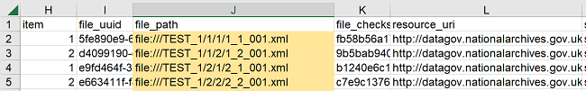
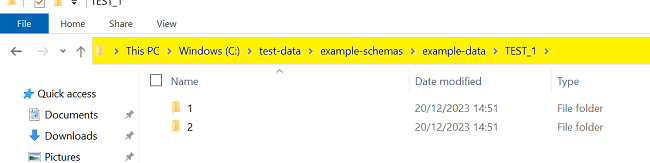
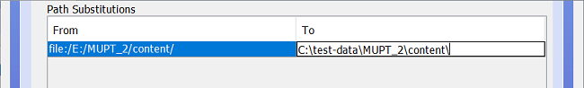

CSV Validator 1.4.1
CSV Validator is a CSV validation and reporting tool which implements CSV Schema Language.
Released as Open Source under the Mozilla Public Licence version 2.0.
This page is for CSV Validator 1.4.1 (and related minor releases), the equivalent page for the previous releases can now found at csv-validator-1.0.html, csv-validator-1.1.html
and csv-validator-1.3.0.html.
Overview
The CSV Validator will take a CSV Schema file and a CSV file, verify that the CSV Schema itself is syntactically correct and then assert that each rule in the CSV Schema holds true for the CSV file. The Validator is predominantly written in Scala 2.13 and runs on any platform with a Java Virtual Machine (JVM). The Validator toolset provides:
- A stand-alone command line tool.
- A desktop application comprising a simple Swing Graphical User Interface (GUI).
- A library that can be embedded into your own Scala project.
- A library that can be embedded into your own Java project.
Background
The National Archives receive metadata, along with collections of Digitised or Born-Digital Collections. Whilst The National Archives typically process metadata in XML and RDF, it was recognised that it was too difficult and/or expensive for many suppliers to produce the desired metadata in XML and/or RDF, as such it was decided that metadata would be received in CSV format.
Our experience shows that when suppliers are asked to produce metadata in XML or RDF there are several possible barriers:
- Many content/document repository systems only export metadata in CSV, or generate XML or RDF in a non-desirable format which would then have to be transformed (at further cost).
- Lack of technical knowledge in either XML or RDF.
- Lack of experience of tools for producing and validating XML or RDF.
- Cost. Installing new software tools comes at a severe cost for those OGDs that have outsourced their IT support.
- Best/Worst case, most suppliers already have Microsoft Excel (or an equivalent) installed which they know how to use to produce a CSV file.
The National Archives set exacting requirements on the metadata that they expect and the format of that Metadata. Such constraints enable them to automatically process it, as the semantics of the metadata are already defined. Whilst previous bespoke tools have been developed in the past for validating data in various CSV files, it was felt that a generic open tool, which could be shared with suppliers, would offer several benefits:
- A common CSV Schema language, would enable The National Archives to absolutely define required metadata formats.
- Developed CSV Schemas could be shared with suppliers and other archival sector organisations.
- Suppliers could validate metadata before sending it to The National Archives. Hopefully reducing mistakes, and therefore, costs to both parties.
- The National Archives could use the same tool to ensure metadata compliance automatically.
- As a secondary concern, it was recognised that this tool would also have value for anyone working with CSV as a data/metadata transfer medium.
New features in Version 1.4.1
A full list of changes associated with CSV Validator 1.4.1 can be found in the release notes.
Installing the CSV Validator
The core of the CSV Validator is written in Scala 2.13, Scala runs in the JVM and requires Java 21 or newer to be available. For our Windows users, we include a JRE (64-bit Java 21 Runtime) with the distribution package. For non-Windows users, you will need to have Java (21+) installed on your computer in order to run the latest version of CSV Validator. The release build is published from the source code repository on GitHub to Maven Central. Current release (as of 2nd October 2025), Version 1.4.1.
CSV Validator 1.4.1 comes with 2 distribution packages.
- csv-validator-distribution-1.4.1-bin-win64-with-jre.zip: This package has a 64-bit JRE bundled with it. If you are a Windows OS user and do not manage your own java installation, this package is most suitable for you
- csv-validator-distribution-1.4.1-bin.zip: This package comprises only the binary files of CSV Validator. If you are a Linux or Mac user, this package is most suitable for you. If you are a Windows user who wants to use your own version of Java, you can use this package
.bat (for Windows OS) and shell scripts (for Linux, Mac) to launch the command line tool or the GUI application.
The package also has a text file (running-csv-validator.txt) that has detailed instructions about running the CSV Validator.
CSV Validator Graphical User Interface (GUI) Application
Starting the GUI
In order to run the CSV Validator via the GUI, navigate to the directory where you installed CSV Validator, and run either:
- csv-validator-gui.bat on Windows operating systems, or;
- csv-validator-gui shell script on Unix/Linux.

Selecting metadata and schema for validation
To validate data, you must supply a full filepath of the csv file to be validated, and of the schema it is to be validated against. There are multiple ways that you can supply the filepaths, you can either:
- type, or copy-and-paste, the filepath into the appropriate box, these are labelled "CSV file" and "CSV Schema file" respectively.
- select the files via a dialog window.
- drag and drop the files onto the application.
Select the files via the dialog window
In order to select the files via a dialog window, click the buttons labelled "Choose..." (highlighted in the image below):
This will open up a standard File picker dialog. The dialog only shows the files of the type being chosen. You can navigate to the file you want to choose in the file system and select it:

Clicking "OK" will populate the related text box:
 This location will be remembered for subsequent file selections.
This location will be remembered for subsequent file selections.
Drag and drop the files onto the application
Go to your file explorer, select the file(s) (you can either drop the files one by one or both together) and drag and drop them onto the application. You don't have to worry about dropping them into their respective boxes; the application will figure it out for you.Using Settings
While in the most straightforward cases, you can validate a CSV file immediately after supplying the filepaths, in many instances you might need to supply Settings options. Using the Settings is equivalent to providing options when running via the Command Line (note that there is one additional option at the command line that is not available within Settings, to produce a detailed report on the parse of the schema itself). To open up Settings, click on the downward-facing double arrow below the file dialog buttons (highlighted below):
Having opened up Settings, you will see that there are 8 sets of options:
CSV Encoding, which has a dropdown menu giving the choice of:UTF-8and;windows-1252;(On Windows)CSV Schema Encoding, which has a dropdown menu giving the choice of:UTF-8and;windows-1252;(On Windows)Maximum number of errors to display;Maximum number of characters in a cell;Fail on first error;Enforce case-sensitive filepath checks;Validate CSV for valid UTF-8 characters, and;Path Substitutions

Maximum number of errors to display
This setting will determine the number of lines of errors that are output in the output pane; it is set to 2000 by default.
Maximum number of characters in a cell
This setting will set a limit on the number of characters allowed in a cell; the default number of characters is 4096
Fail on first error
With this setting selected, validation will terminate when the first
validation error is encountered in the CSV file.
If there are no validation errors, the whole CSV file will be validated and return PASS.
You should be aware that the CSV Schema can declare that some validation tests will produce only validation warnings, rather than validation errors.
A validation warning will not stop validation, even with "Fail on first error" set.
This setting is equivalent to using the -f true or --failfast true options when running via the Command Line.
Note: If you are working with a particularly large file, it can be beneficial to work with this option enabled. If there are errors that are likely to come up for multiple files (e.g. File not found because of path substitution error), it could be quicker to fail on first error, fix it, then run validation on the whole file.
Enforce case-sensitive filepath checks
With this setting selected, validation treats filepaths as being case-sensitive, even if the file system itself is not (e.g. on Windows NTFS).
Without doing this, data which appears to validate on a Windows machine may then fail when further processing is carried out on a system where the file system
is case-sensitive (e.g. Unix/Linux).
This setting is equivalent to using the -c true or --case-sensitive-paths true options when running via the Command Line.
UTF-8 Validation
This setting is on by default, meaning that the validator also verifies that the CSV file appears to contain only UTF-8 characters.
It is ignored if CSV Encoding has been changed to something other than UTF-8, and can otherwise be disabled by unselecting the checkbox.
This setting is equivalent to using the --disable-utf8-validation option when running via the Command Line.
Path Substitutions
Path Substitutions is a slightly tricky concept to grasp initially. As described in the Background section above, the original use case at The National Archives was for a tool to validate metadata files. Metadata files generally describe a set of digital files being transferred to The National Archives and so contain information, including a filepath and checksum, about each file in a particular transfer. In addition to checking that the metadata files are correctly structured, we wish to check that the file actually exists at the filepath specified, and that when recalculated, the checksum for the files matches the value supplied in the CSV file. To this end, the CSV Schema language contains a set of so-called External Single Expressions, which allow reference to other file system resources outside the CSV file being validated. However, it is likely that after transfer, the drive letter or mount point (at least) will have changed from the original. Path Substitutions allow us to overcome this at validation time by effectively performing a simple find-and-replace within the file during validation, which maps the supplied filepath to the equivalent on the system where validation is actually taking place.
e.g. Lets assume that we have received the data along with a metadata file describing the data from someone else. On their machine, the data was stored on
the root folder under a folder /TEST_1 This means that the paths to the data, as referenced in the metadata file, are defined from that folder as shown below:
 .
However, the same data is made available on the machine where CSV Validator runs at a different location (C:\test-data\example-schemas\example-data\TEST_1) as shown below:
 .
In this case, you can set up a path substitution From file:///TEST_1/ To C:\test-data\example-schemas\example-data\TEST_1\ so that, when
looking for the corresponding file, CSV Validator will substitute the path before finding and reading the data file. Please note: If you supply the "To:" path as a URI rather
than a file system path, you may need to reverse the slashes on Windows systems.
Multiple path substitutions can be supplied to allow for the cases where the content files are in many different locations.
Creating Path Substitutions
To create a Path Substitution in the GUI, click the "Add Path Substitution..." button (highlighted):

This will open a popup:

If the "identifier" column in your CSV is present, CSV Validator will look through it and find the parent folder for the files and then add it to the "From:" box for you, automatically.
If the "from" box has not been automatically populated, manually enter the top-level folder (as a text string) that all the file paths in the supplied CSV belong to (this string should be contained in the file paths),
and in the "To:" box, the top-level folder (as a text string) which should be substituted; this should be the folder on your computer that contains the files.
So considering the examples already used in this document, the metadata CSV file is found at C:\test-data\MUPT_2\metadata_v9_MUPT2Y17HS001.csv; we can see
that there is a folder named "content" alongside this file, that folder contains the files which this file describes.
When initially created, the metadata CSV file and files (the CSV describes) were on E: drive, and they are also now in a project-related folder structure.
So the filepaths in the metadata CSV file all begin file:/E:/MUPT_2/content/ (where they came from) - when we run the validator, it will need to look for the "content" files at
C:\test-data\MUPT_2\content\ (where they are now) in order to check for their existence and verify the associated checksums. We enter the folder paths into
the "From:" and "To:" boxes respectively, and click OK; this gives:

Creating a Path Substitution in this way is equivalent to running via the Command Line with the -p or --path flags and supplying a key:value pair.
Editing or Removing Path Substitutions
To edit a substitution, simply double-click on the field you wish to edit:
Hit <Enter> or <Tab>, or click on the other side of the substitution, to complete the edit. The edited fields continue to be highlighted in the "selection colour" of the system being used.
To completely remove a path substitution:
- click on an existing path substitution definition
- NOTE: to select multiple definitions for deletion, hold down your mouse button and drag your cursor to the subsequent definition(s) you'd like to delete
- alternatively, you can hold down the `Ctrl` (`Command` on a Mac) button on your keyboard and select the definitions you'd like to delete
- click the "
Remove Path Substitution" button
Validating a CSV file and understanding program output
Having selected a CSV file and schema, and chosen which settings (if any) to apply, validation is performed by either clicking the large "Validate" or the "Validate Metadata" buttons. "Validate Metadata", will skip file validation: checksum, integrity and whether the "file exists" checks and only perform the metadata checks; "Validate" on the other hand, will do both the metadata and file validation checks. If checksum verification is being performed, the validation can take a considerable amount of time, as each file described in the CSV file has to be read in full in order to calculate the checksum. The mouse pointer will change to the egg-timer (or equivalent for your operating system) while validation is taking place.
If the data is completely clean, and validates perfectly against the schema, the only output returned to the output pane will be PASS.
Schema Errors
If you are developing schemas, it is possible to make syntax errors in the schema, for example, a mismatch in the declared number of columns
(using the Total Columns Directive) against the actual number of
column definitions included in the schema (e.g.
@totalColumns = 9 but number of columns defined = 10 at line: 2, column: 1).

The schema itself is always checked before validation of the data begins, and schema errors always terminate the validation. If the Version Declaration
has been omitted from the schema, or is incorrect, you will see a schema error saying that the Version Declaration is not present
(eg [1.1] failure: version 1.0 missing or incorrect); you will also see this if you accidentally put the filepath for the CSV data file into the field for the schema and vice versa:
![[1.1] failure: version 1.0 missing or incorrect
<br />
batch_code,department,series,piece,item,ordinal,file_uuid,file_path,file_checksum,resource_uri,scan_operator,scan_id,scan_location,scan_native_format,scan_timestamp,image_resolution,image_width,image_height,image_tonal_resolution,image_format,image_colour_space,process_location,jp2_creation_timestamp,uuid_timestamp,embed_timestamp,image_split,image_split_other_uuid,image_split_operator,image_split_timestamp,image_crop,image_crop_operator,image_crop_timestamp,image_deskew,image_deskew_operator,image_deskew_timestamp,QA-code,comments,transcribed_volume_number,transcribed_birth_date_day,transcribed_birth_date_month,transcribed_birth_date_year,transcribed_official_number
<br />
^](images/1.4.1/version-declaration-error.png)
Validation Errors
When Validation Errors occur, they will be reported in the output pane on the completion of validation.
The report will be prefixed with Error: and will then show: the Validation Rule where the error has occurred,
the line and data column from the CSV file where the error has occurred, the actual data present in the file, and for rules such as checksum validation,
what the computed value of the data was. The line number refers to data lines only, so if the CSV file contains a header row, you may see an apparent discrepancy in the line numbers displayed when you view
the data in a text editor or spreadsheet program, compared to the line number indicated by the CSV Validator.

Error: checksum(file($file_path), "SHA-256") file "file:///TEST_1/1/1/1_1_001.xml" checksum match fails for line: 1, column: file_checksum, value: "fb58b56a17af0f52cf794c108e0c1574a3a2c02b25e22699668bb43801028432". Computed checksum value:"16f5e200047a0b71bea821ea6db7c3a79605079baae96940a1ec8bb0d6ab4d6d" FAIL
The next image shows a more varied selection of Validation Errors, and demonstrates that the basic format of the error messages is consistent:

The full text of each of these example error messages is shown below, the errors are:
- a checksum mismatch - note that both the checksum read from the CSV file and the actual computed checksum value are shown.
- a regex error - the regex shown only allows the number before
.xmlto go up to 010, rather than value of 011 that has been put in the CSV file. - a concatenation mismatch - the concatenation of the various strings and field values shown does not match the value actually found in the CSV file (in this instance you would have to manually check the CSV file to see which field is in error).
- a range mismatch - the
image_widthvalue is outside the specified range. - a value error - an incorrect value has been supplied for
image_format.
Error: checksum(file($file_path), "SHA-256") file "file:///TEST_1/2/2/2_2_010.xml" checksum match fails for line: 40, column: file_checksum, value: "f7ab46b417eecb57c43e62996646780c1e9e2aa7da4af361dc4616c5aff26f65". Computed checksum value:"d59a033ebd100b08f1c93a0475c9f33f898bb13740fed61f8e86435d01a70e86"
Error: regex(".*[12]_[12]_((00[1-9])|(010)).xml$") fails for line: 41, column: file_path, value: "file:///TEST_1/2/2/2_2_011.xml"
Error: is(concat("http://datagov.nationalarchives.gov.uk/66/", $department, "/", $series, "/", $piece, "/", $item, "/", $file_uuid)) fails for line: 41, column: resource_uri, value: "http://datagov.nationalarchives.gov.uk/66/TEST/1/2/2/ab677099-950e-4853-b2d4-6d39dc1b8722"
Error: range(2000,*) fails for line: 41, column: image_width, value: "234"
Error: is("x-fmt/392") fails for line: 41, column: image_format, value: "x-fmt/391"
FAIL
Saving output as a report
If you wish to save the validation output as a report, for example, in order to send it to whoever supplied the data so that they can correct it, simply click the "Save Results..." button towards the bottom right of the CSV Validator window. If you have opened the Settings pane, you may need to close it again, or move your mouse to the bottom of the window and drag the edge/corner downwards to expand it, in order to be able to see this button. Clicking the "Save Results" button will open a standard "save" dialog box with a suggested file name (with the date that you clicked the button appended to it); you can then save the output as a simple text file at your desired location.
Closing the validator
All standard means of closing the window should work, or click the "Close" button at the bottom right of the validator window. If you have opened the "Settings" pane, you may need to close it again, or move your mouse to the bottom of the window and drag the edge/corner downwards to expand it, in order to be able to see this button.
CSV Validator Command Line Tool
Starting the CSV Validator at the command line
In order to run the CSV Validator via the command line, set your working directory to be the installation directory and execute either:
csv-validator-cmd.baton Windows operating systems, or;csv-validator-cmdshell script on Unix/Linux.
Error: Missing argument <csv-path> Error: Missing argument <csv-schema-path> Try --help for more information.
Subsequently, executing with the --help argument, should produce the following help text:
CSV Validator - Command Line 1.4.1
Usage: validate [options] <csv-path> <csv-schema-path>
--help
Prints this usage text
-t | --trace-parser
Prints a trace of the parser parse
-f <value> | --fail-fast <value>
Stops on the first validation error rather than reporting all errors
-p:<key>=<value> | --path:<key>=<value>
Allows you to substitute a file path (or part of) in the CSV for a different file path
-c <value> | --case-sensitive-paths <value>
Enforces case-sensitive file path checking. Useful when validating on case-insensitive filesystems like Windows NTFS
-x <value> | --csv-encoding <value>
Defines the charset encoding used in the CSV file
-y <value> | --csv-schema-encoding <value>
Defines the charset encoding used in the CSV Schema file
--disable-utf8-validation
Disable UTF-8 validation for CSV files.
--max-chars-per-cell
Maximum number of chars allowed in cell (is set to 4096 by default)
--skip-file-checks
Skip integrity, checksum and file existence checks
--show-progress
Show progress
<csv-path>
The path to the CSV file to validate
<csv-schema-path>
The path to the CSV Schema file to use for validation
Using command line parameters
As a minimum, you must supply two command line parameters in order to validate a CSV file. The first parameter should be the path to the CSV file you wish to validate, the second, the path to the schema. If the path contains spaces, wrap it appropriately, e.g. in double quotes (") on Windows.
Using command line options
11 options (plus --help, which merely reproduces the usage text given above) are available to modify certain behaviours of the CSV Validator,
or to provide debugging assistance, and they are:
Trace
The trace option produces terminal output describing how the CSV Schema has been parsed by the CSV Validator. In earlier versions of the CSV Validator, complex schemas have sometimes taken several minutes to parse, or even hung completely. This output is to allow developers to understand where problems have arisen in order to troubleshoot the parser.
This option is only available at the command line, and thus, not via the Settings panel in the GUI version of the application.
Fail fast
To use the fail fast option, supply either of the flags -f or --fail-fast along with a (boolean) value.
Using either true or 1 as the supplied value switches the option on. With this option in force,
validation will be terminated when the first Validation Error is encountered.
By default (or if you supply false or 0 with this option flag), validation continues to the end of the CSV file
being validated, and all validation errors are reported.
However, Schema Errors always cause immediate termination of validation, regardless of the use of this option.
Path substitutions
To use the path substitution option, supply either of the flags -p or --path along with a key=value pair.
The reasons for using path substitutions are discussed in more detail in the Path Substitutions "GUI Application" section.
The key represents the text string to be found in the CSV file being validated, the value represents the string to replace it with.
For the example path substitution given above (in the Path Substitutions "GUI Application" section), the command line parameter would be entered as:
-p file:/E:/MUPT_2/content/=C:\test-data\MUPT_2\content\
Note that, if the paths are expressed as a URL, characters (such as spaces) that are not permitted in URLs will need to be escaped (see Example CSV Schemas below).
Case-sensitive paths
To use the case-sensitive paths option, supply either of the flags -c or --case-sensitive-paths along with a (boolean) value.
Using either true or 1 as the supplied value, switches the option on. With this option in force,
file paths used with Column Validation Expressions such as
File Exists Expressions will be treated as being case-sensitive even on operating systems where
that would not normally be the case, such as Windows NTFS.
By default (or if you supply false or 0 with this option flag), the behaviour of the host operating system will be used.
This helps to avoid inconsistent validation results when validating the same CSV file and schema on different operating systems.
CSV File Encoding
To specify that the CSV file that you are validating uses a different character set encoding than the default (UTF-8 without a byte order mark),
supply either of the flags -x or --csv-encoding along with the name of the character set encoding.
CSV Schema File Encoding
To specify that the CSV Schema file that you are parsing uses a different character set encoding than the default (UTF-8 without a byte order mark),
supply either of the flags -y or --csv-schema-encoding along with the name of the character set encoding.
Disable UTF-8 Validation
By default, the validator also verifies that the CSV file appears to contain only UTF-8 characters.
UTF-8 validation is automatically disabled if the flags -x or --csv-encoding
have been used to specify an encoding other than UTF-8. To disable UTF-8 validation for some other reason,
use the flag --disable-utf8-validation (there is deliberately no short form for this flag)
Max Chars Per Cell
By default, the validator limits the number of characters allowed in a cell to 4096 to prevent crashing; if you'd like to
increase/decrease this limit, use the --max-chars-per-cell flag, followed by the number of characters a
cell is allowed to have e.g. --max-chars-per-cell 50000.
Skip File Checks
If you'd like to skip the integrity, checksum and file existence checks, use the flag --skip-file-checks.
Show Progress
Setting the flag --show-progress causes the validator to produce an output statement for each line of the CSV file,
similar to processing 1 of 41. The first number represents the line number within the file (including any header row),
while the second number represents the total number of lines in the file (including any header row).
This is likely to be extended in future releases to allow finer grained control over the frequency of output, particularly for larger CSV files.
CSV Path
The file system path for the CSV to be validated, expressed in the standard manner for the operating system you are using.
CSV Schema Path
The file system path for the CSV Schema to be used for validation, expressed in the standard manner for the operating system you are using.
Command line output
All output is written to stdout by default, and so can be written to a file by the usual terminal redirection means. Reporting is otherwise identical to that produced by the GUI client, which is described in the section Validating a CSV file and understanding program output, above.
A Validation Example
In order to get a better understanding of how to use the validator, see the example CSV Schema file, digitised_surrogate_tech_acq_metadata_v1_TESTBATCH000.csvs, and the CSV File digitised_surrogate_tech_acq_metadata_v1_TESTBATCH000.csv, which complies with the schema. In the "file_path" column of the CSV file, are references to XML files in the folder structure below TEST_1
- Download the two files (mentioned above)
- Add the filepaths of these files their respective boxes
- Download and run the latest version of the validator, if you haven't already
- Click the "Validate" button to run the CSV Validator on them (via either of the methods described above)
- You will find that initially, it reports validation errors as it cannot find the XML files for the fileExists or checksum column validation tests.
- Create a path substitution, replacing
file:///TEST_1/withfile:///<your system path>/TEST_1/- If you simply placed the repository somewhere on your
C:\drive on a Windows system, <your system path> will look something like this,C:\csv-schema\example-schemas\example-data, but as it's a URL, you should reverse the slashes, like thisC:/csv-schema/example-schemas/example-data - In addition, if there are any spaces in the path, you must escape them by replacing them with
%20e.g.C:/csv-schema/example-schemas/spaces in nameshould becomeC:/csv-schema/example-schemas/spaces%20in%20name
- If you simply placed the repository somewhere on your
- After doing this, if you press the "validate" button, you should then find that all the validation tests pass.
NOTE: On a Unix-based system e.g. macOS, Linux etc, you will not need to reverse the slashes, but spaces and other special characters will still need to be escaped.
NOTE: There is an additional complication in that the % character is treated as a special character in Windows scripts, and itself needs to be escaped,
so you should actually use %%20 to obtain the desired behaviour (there can be a further complication if you are calling out from a controlling script to launch the validator i.e.
call csv-validator-cmd.bat where the outer script will do a first replacement of the escaped character, and so within the call statement you would actually need to use %%%%20 to obtain the desired behaviour (this is passed to the call statement itself as %%20).
Example CSV Schemas
More example of schemas can be found here Example Schemas, in the GitHub repository digital-preservation/csv-schema.
System and Performance Considerations
Performance of the CSV Validator is generally limited by the rate at which data can be read from storage. This is particularly true when the CSV Schema used includes checksum verification for files referred to in the metadata file, as the time taken to complete validation is almost entirely driven by the time it takes to read the files and compute the checksums.
The CSV file being validated is read line-by-line so the size of the file does not generally affect the memory required for processing,
even when handling CSV files of the order of 0.5 gigabytes in total size or a million rows.
However, if the schema uses the unique Column Validation Expression to ensure that a given column
(or combination of columns) has a unique value for each row of the CSV file, then a hash map is built by the validator to check the uniqueness.
Building a hash map for a CSV file of the order of 0.5 gigabytes or a million rows, could use up a considerable amount of memory and therefore,
it may be necessary to increase the Max Heap Size available to the JVM so that validation can complete without issue.
If the heap is not sufficient, validation will stall, and after a period of time, Java will return an error message similar to:
"java.lang.OutOfMemoryError: Java heap space."
Changing the heap size involves setting the -Xmx option; the scripts contained in the distribution package have the ability to configure
maximum memory used by the JVM which runs CSV Validator. If you find that you are getting an error related to not having enough heap memory,
you can increase the memory by following the steps given below:
NOTE: The following examples set the available max heap memory to 2048MB (2GB). You can change the value to suit your own need. Also note, that the following way of increasing available memory only affects the scripts when launched within the same window, if you open another window, you will need to set the max memory in that window as well.
On Windows,
- Open a command prompt
- type
set csvValidatorMemory=2048 - Without closing the command prompt, within the same window, launch the batch file
- Open a terminal window
- type
export csvValidatorMemory=2048 - Without closing the terminal window, within the same window, call the shell script
For Software Developers
You can find the repo for CSV Validator here: https://github.com/digital-preservation/csv-validator.
In order to update this page, visit this branch: https://github.com/digital-preservation/csv-validator/tree/gh-pages.